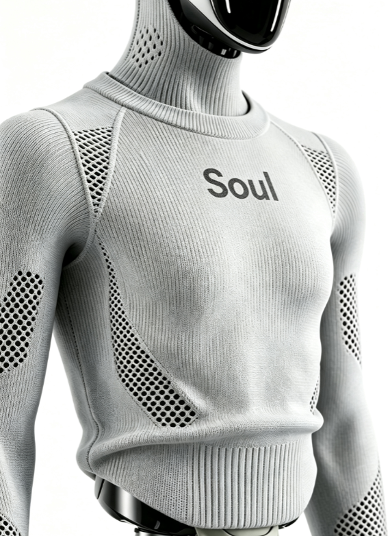
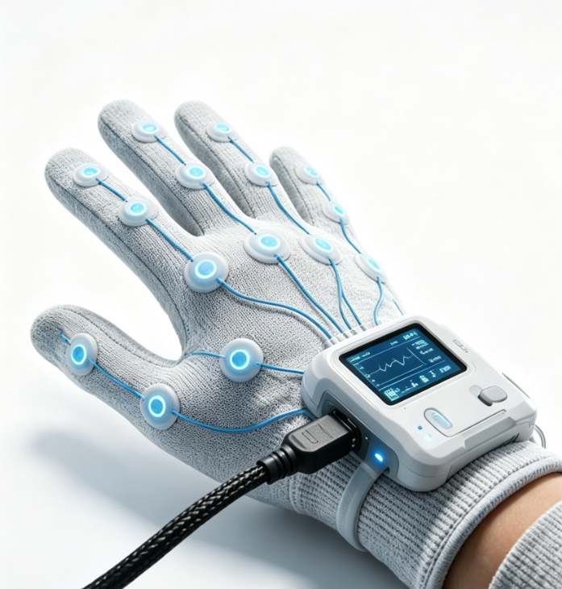

Engineered from robot geometry for a close-fitting, breathable and serviceable functional shell, with optional sensor integration.
Image-, sample- and 3D-data-based customization available for irregular exoskeletons, moving joints and sensor interfaces.

Developed for multi-finger dexterous hands, bionic hands and end effectors, balancing joint travel, gripping friction, sensing zones and cable interfaces in a fitted, lightweight and serviceable covering.
Custom development is available from hand geometry, finger-joint dimensions, sensor layouts and target operating scenarios.